File list
This special page shows all uploaded files.
{kind=link}
| Date | Name | Thumbnail | Size | User | Description | Versions |
|---|---|---|---|---|---|---|
| 10:42, 11 May 2019 | 1-1.jpg (file) | 24 KB | Alice | 1 | ||
| 01:54, 23 September 2015 | 1.png (file) | 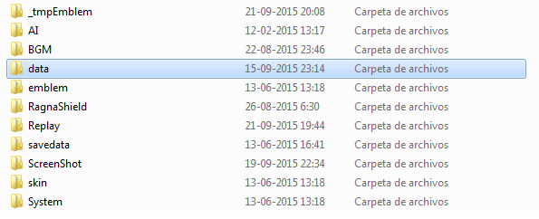 | 21 KB | Brownie | SFXGuide11 | 1 |
| 06:07, 14 February 2020 | 10000.png (file) | 895 bytes | Skorian | Newfile | 1 | |
| 16:28, 2 October 2018 | 1010.gif (file) | 6 KB | AloeLeaflet | 1 | ||
| 15:18, 6 March 2019 | 1013.gif (file) | 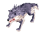 | 17 KB | Alice | 1 | |
| 15:18, 6 March 2019 | 1015.gif (file) | 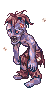 | 25 KB | Alice | 1 | |
| 12:20, 23 November 2018 | 1016.gif (file) | 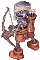 | 11 KB | AloeLeaflet | 1 | |
| 21:27, 20 March 2017 | 1020.gif (file) | 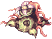 | 11 KB | AloeLeaflet | 1 | |
| 21:17, 20 March 2017 | 1023.gif (file) | 39 KB | AloeLeaflet | 1 | ||
| 16:39, 2 October 2018 | 1026.gif (file) | 13 KB | AloeLeaflet | 1 | ||
| 12:20, 23 November 2018 | 1028.gif (file) | 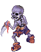 | 13 KB | AloeLeaflet | 1 | |
| 01:12, 6 October 2018 | 1031.gif (file) | 2 KB | AloeLeaflet | 1 | ||
| 12:21, 23 November 2018 | 1032.gif (file) | 12 KB | AloeLeaflet | 1 | ||
| 10:42, 11 October 2019 | 1037.gif (file) | 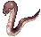 | 2 KB | Alice | 1 | |
| 10:42, 11 October 2019 | 1055.gif (file) | 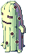 | 4 KB | Alice | 1 | |
| 00:50, 22 November 2018 | 1068.gif (file) | 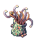 | 43 KB | AloeLeaflet | 1 | |
| 21:27, 20 March 2017 | 1077.gif (file) | 8 KB | AloeLeaflet | 1 | ||
| 11:17, 25 February 2019 | 1078.gif (file) | 4 KB | Alice | 1 | ||
| 11:17, 25 February 2019 | 1079.gif (file) | 4 KB | Alice | 1 | ||
| 11:17, 25 February 2019 | 1080.gif (file) | 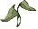 | 1 KB | Alice | 1 | |
| 11:17, 25 February 2019 | 1081.gif (file) | 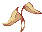 | 1 KB | Alice | 1 | |
| 11:18, 25 February 2019 | 1082.gif (file) | 4 KB | Alice | 1 | ||
| 11:17, 25 February 2019 | 1083.gif (file) | 6 KB | Alice | 1 | ||
| 11:18, 25 February 2019 | 1084.gif (file) | 1,001 bytes | Alice | 1 | ||
| 11:18, 25 February 2019 | 1085.gif (file) |  |
298 bytes | Alice | 1 | |
| 01:11, 6 October 2018 | 1090.gif (file) |  |
17 KB | AloeLeaflet | 1 | |
| 12:20, 23 November 2018 | 1102.gif (file) |  |
13 KB | AloeLeaflet | 1 | |
| 21:20, 20 March 2017 | 1106.gif (file) | 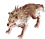 | 6 KB | AloeLeaflet | 1 | |
| 16:35, 2 October 2018 | 1107.gif (file) | 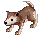 | 1 KB | AloeLeaflet | 1 | |
| 16:55, 2 October 2018 | 1109.gif (file) |  |
2 KB | AloeLeaflet | 1 | |
| 15:19, 6 March 2019 | 1117.gif (file) | 30 KB | Alice | 1 | ||
| 00:50, 22 November 2018 | 1118.gif (file) | 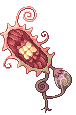 | 10 KB | AloeLeaflet | 1 | |
| 15:48, 8 March 2019 | 1133.gif (file) | 8 KB | Alice | 1 | ||
| 15:48, 8 March 2019 | 1134.gif (file) | 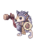 | 8 KB | Alice | 1 | |
| 15:48, 8 March 2019 | 1135.gif (file) | 8 KB | Alice | 1 | ||
| 00:59, 22 November 2018 | 1142.gif (file) | 2 KB | AloeLeaflet | 1 | ||
| 10:43, 5 October 2018 | 1143.gif (file) |  |
9 KB | AloeLeaflet | 1 | |
| 12:20, 23 November 2018 | 1149.gif (file) | 24 KB | AloeLeaflet | 1 | ||
| 21:27, 20 March 2017 | 1152.gif (file) | 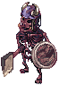 | 12 KB | AloeLeaflet | 1 | |
| 15:19, 6 March 2019 | 1153.gif (file) | 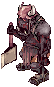 | 33 KB | Alice | 1 | |
| 12:20, 23 November 2018 | 1155.gif (file) |  |
4 KB | AloeLeaflet | 1 | |
| 21:23, 20 March 2017 | 1166.gif (file) |  |
10 KB | AloeLeaflet | 1 | |
| 16:44, 2 October 2018 | 1170.gif (file) |  |
12 KB | AloeLeaflet | 1 | |
| 21:48, 20 March 2017 | 1177.gif (file) |  |
2 KB | AloeLeaflet | 1 | |
| 22:07, 23 November 2018 | 1180.gif (file) |  |
2 KB | AloeLeaflet | 1 | |
| 21:32, 20 March 2017 | 1190.gif (file) | 23 KB | AloeLeaflet | 1 | ||
| 21:16, 20 March 2017 | 1192.gif (file) |  |
20 KB | AloeLeaflet | 1 | |
| 07:59, 4 November 2015 | 1195.gif (file) | 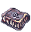 | 18 KB | Adri | 1 | |
| 15:20, 6 March 2019 | 1198.gif (file) | 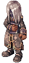 | 13 KB | Alice | 1 | |
| 01:22, 6 May 2016 | 12034 box of panting.png (file) | 10 KB | Renata | 1 |
{kind=link}
{kind=link}
{kind=link}
{kind=link}
{kind=link}
{kind=link}
{kind=link}
{kind=link}
{kind=link}
{kind=link}
{kind=link}
{kind=link}
{kind=link}
{kind=link}
{kind=link}
{kind=link}
{kind=link}
{kind=link}
{kind=link}
{kind=link}
{kind=link}
{kind=link}
{kind=link}
{kind=link}
{kind=link}